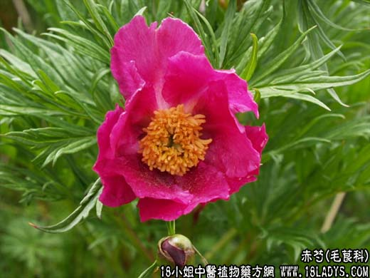

【中药概述】
赤芍为毛茛科草本植物芍药、草芍药或川赤芍的根。苦、微寒。归肝经。
1．清热凉血：用于温病热入血分，身热，舌绛，身发斑疹，以及血热妄行、吐血、衄血等症。常与鲜地黄 牡丹皮等同用，如（犀角地黄汤、紫草快斑汤）。
2．活血散瘀：用于血热瘀滞之心腹疼痛、经闭、痛经，可与当归，丹皮，川芎等同用；血热痈肿，能凉血活血，散瘀止痛，或脑震荡后遗症。如（血府逐瘀汤）、（<证治准绳>赤芍药散）。
3．用于肝热目赤、胁肋疼痛。
【药效鉴别】
赤芍与丹皮功能相近，两药配用，能增强清血分实热及活血行瘀作用。赤芍活血行瘀作用较丹皮为强。
【药理作用】
芍药甙具有较好的解痉作用；亦有一定的降压作用，并对血管有轻度扩张作用；有镇痛、镇静、抗惊厥、抗炎、抗溃疡、抗菌、解热等作用；并对某些病毒亦有抑制作用。
【化学成分】
含芍药甙、苯甲酸、酚类、树脂、挥发油、鞣质、生物碱及色素等。
【用量用法】
6——30g，水煎服，亦可入丸、散剂。
【使用注意】
凡血虚有寒、月经过多、孕妇忌用。